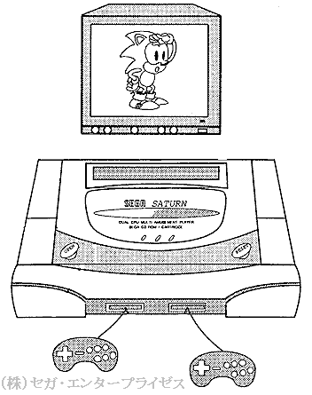

★HARDWARE Manual
★セガサターン概要マニュアル
★HARDWARE Manual
★セガサターン概要マニュアル
 |
●メインCPUは32ビットRISCチップ ・DSPと同様の演算器をサポートしたSH-2搭載 | ●メモリ ・32Mビット(４Mバイト) ・CD-ROM用４Mビット(512Kバイト) |
●強力なグラフィック機能 ・最大16,777,216色 ・2400万色ピクセル／SEC(VDPI) ・ポリゴン表示可能のスプライトプロセッサ ・高性能背景処理プロセッサ |
●サウンド機能の強化 ・32チャンネルPCM音源 ・FM音源 ・音声専用エフェクトDSP搭載 |
●最先端のCD-ROMドライブ ・32ビットRISCチップSH-1搭載 ・MPEG(オプション) |
・C言語、アセンブリ言語 |
★HARDWARE Manual
★セガサターン概要マニュアル